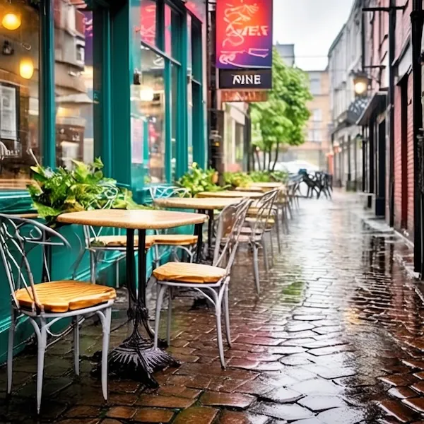
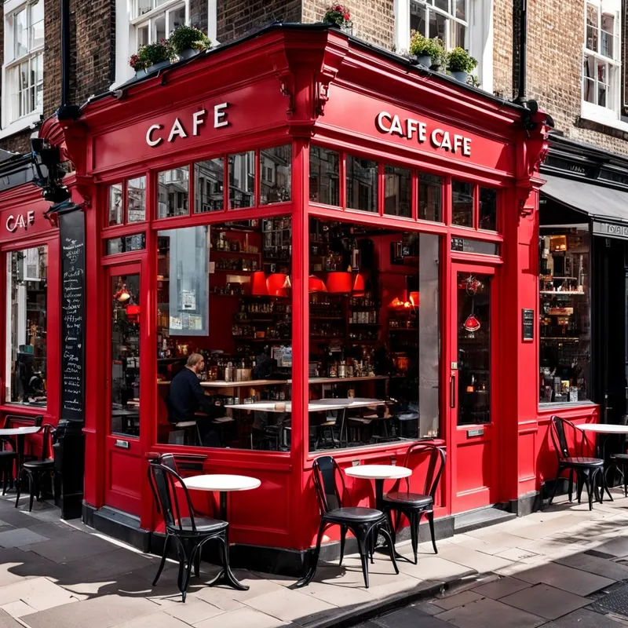
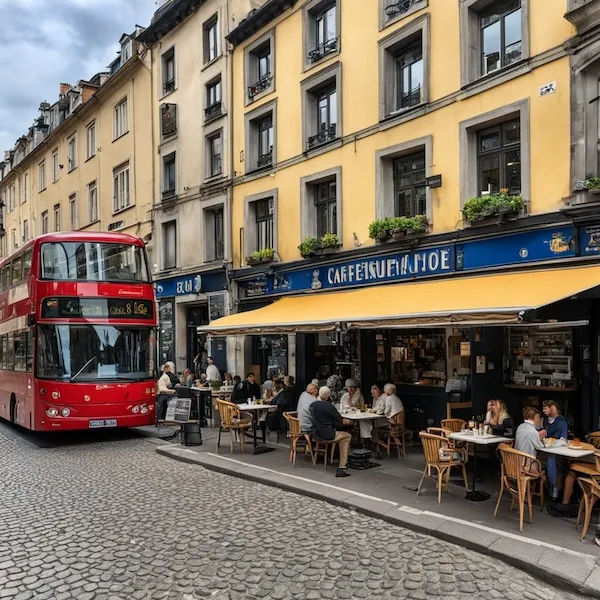
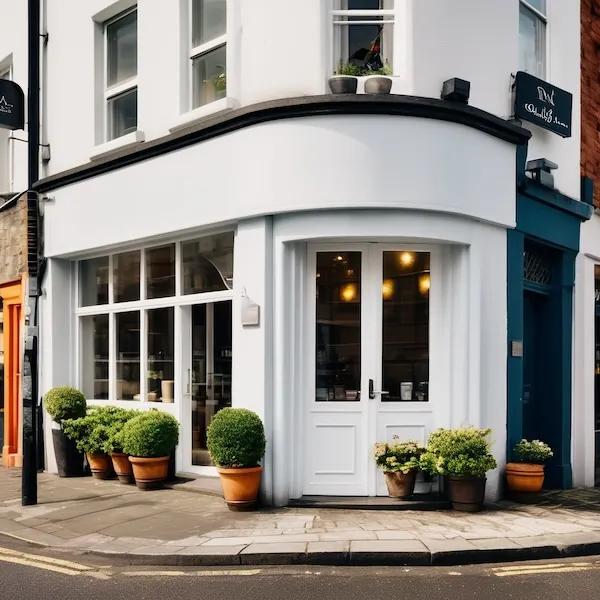

Reviews
Cork Coffee Roasters
Cork Coffee Roasters, with three cozy outposts across the city – Bridge Street, Anglesea Street, and French
Church Street – stands out as a haven for coffee purists. Boasting a consistent reputation for serving the
best
coffee in town, this trio of small-sized cafes offers a delightful escape for aficionados seeking quality
brews
at normal prices.
minimalistic style, though bordering on simplicity, creates a tranquil environment that's perfect for a
leisurely sit-down. The size of each location varies, but the intimate settings add to the charm.
those with a discerning palate, Cork Coffee Roasters is a must-visit. The style may be consistent and, to
some,
verge on the side of simplicity, but if all you want is the best coffee in town, then this is the café to go
to.

5 Points
Nestled on McCurtain Street in the city center, 5 Points seamlessly marries the art of coffee with delectable
bagel creations, making it a culinary gem in Cork. The medium-sized café exudes an artsy vibe that complements
its diverse menu.
The consistently amazing coffee quality at 5 Points sets the stage for a delightful experience. As a bagel
haven, the café offers a superb selection of bread and toppings, creating a harmonious blend of flavors that
tantalize the taste buds. The prices are wallet-friendly, making it an ideal spot for those seeking both
quality
and value.
witness a bustling crowd, so consider arriving early if you crave a leisurely meal with your coffee. Despite
the potential for a busy atmosphere, 5 Points remains the best place to go if you're in the mood for a
satisfying meal paired with exceptional coffee. Whether you're a coffee connoisseur or a food enthusiast, this
café on McCurtain Street is a must-visit for a delightful fusion of flavors and ambiance.

Bean and Leaf
Nestled on Oliver Plunkett Street in the city center, Bean and Leaf offers a spacious retreat for those
seeking
a charming ambiance. With a somewhat large layout and eclectic chairs, the café's atmosphere is inviting,
creating a cozy haven in the midst of Cork City.
the coffee is merely ok, the true charm lies in the lovely atmosphere. Opt for the second floor for a great
view of the city center, or enjoy the outdoors on sunny days with the available outdoor seating.
Bean and Leaf proves to be an ideal spot for hanging out, studying, or indulging in some people watching.
However, exercise caution when it comes to pastries – though tempting in appearance, they may leave your taste
buds wanting. On the bright side, the café compensates with decent sandwich options, making it a suitable
choice
for a leisurely meal in a picturesque setting.

Three Fools Coffee
Nestled in the bustling heart of Cork City on Grand Parade, Three Fools Coffee invites you into a small yet
vibrant haven for coffee enthusiasts. As you step inside, the modern and simple décor immediately sets a
trendy
tone, creating an atmosphere that feels both chic and unpretentious.
The aroma of freshly brewed coffee fills the air, promising a delightful experience for your taste buds. The
coffee quality at Three Fools Coffee is commendable, delivering a rich and satisfying sip that captures the
essence of a well-crafted brew. Moreover, the prices are reasonable, making it an accessible choice for both
casual coffee lovers and aficionados alike.
The café's compact size adds to its charm, but it's worth noting that it can get quite crowded, especially
during peak hours. The staff, though clearly passionate about their craft, tends to be in a rush, which might
affect the overall pace of service.
For the best experience, consider visiting on a weekday when the hustle and bustle of the city center ease up
a
bit. This allows you to fully appreciate the modern aesthetics and simplicity of Three Fools Coffee without
the
added pressure of a busy crowd.
In summary, Three Fools Coffee on Grand Parade is a gem in the city center, offering good coffee at normal
prices in a stylish setting. Choose a quieter weekday moment to enjoy the cozy ambiance and savor the
carefully
crafted beverages without the rush.
